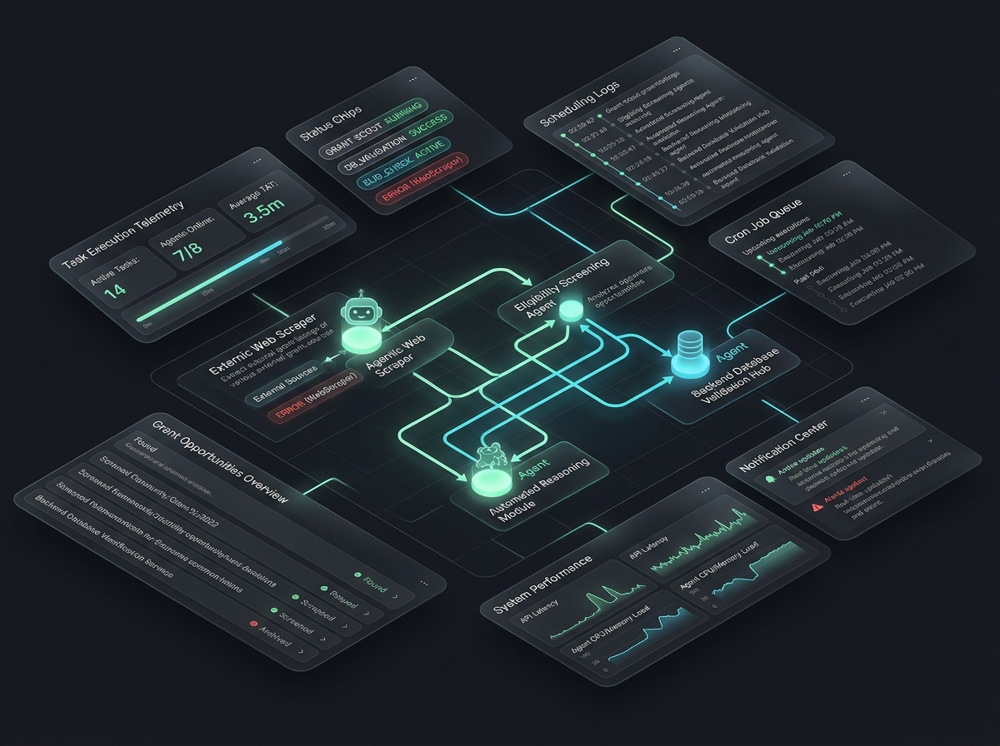
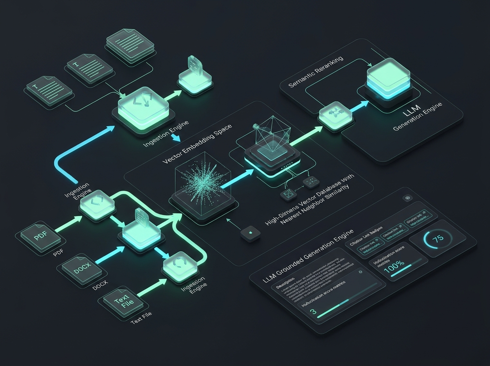

Agentic & Django Automation
3-stage automated invoice reminders, browser-automated grant monitoring across 5+ sources, and SQL/API validation.
Deep-dive breakdown of systems engineered, evaluation frameworks built, and workflow validation across Dubai, Trivandrum, and London.

3-stage automated invoice reminders, browser-automated grant monitoring across 5+ sources, and SQL/API validation.

Multi-document retrieval assistant evaluated with LLM-as-a-Judge, embedding similarity, BLEU, and ROUGE in Dockerized REST services.

57,391 cleaned software reviews analysed with topic discovery, 82.94% emotion classification baseline, and PM prioritization views.
| Organization & Tenure | Role Focus | Core Systems Shipped | Verification & Impact |
|---|---|---|---|
|
Wadi Al Ain Dubai · Jul 2025 – Jun 2026 |
Software Developer | 3-stage invoice reminder workflow; agentic Python & browser-automation grant monitor across 5+ funding sources; Django backend APIs. | Targeted 40% reduction in manual follow-up effort; validated SQL integrity, input handling, failure recovery, and multi-step consistency. |
|
Ladder7 Nextstep Solutions Trivandrum · Mar 2025 – Jun 2025 |
Data Science Associate | Multi-document RAG research assistant built with dense embeddings, vector search, prompt refinement, and Dockerized REST APIs. | Evaluated relevance, correctness, faithfulness, and hallucinations using LLM-as-a-Judge, embedding similarity, BLEU, and ROUGE. |
|
First Quadrant Labs London · Dec 2024 – Feb 2025 |
Data Science Intern | NLP review analytics across 57,391 cleaned software reviews, interactive PM evidence dashboard, and incremental CSV ingestion pipeline. | 82.94% accuracy emotion classification logistic regression baseline with schema validation, duplicate detection, and import logging. |
Wadi Al Ain Documents Clearing Services
Three-stage invoice follow-up state tracker and an autonomous Python + browser automation pipeline aggregating grant criteria and deadlines across 5+ external portals.
End-to-end Django REST endpoint checks, SQL query verification, edge-case input validation, defect root-cause investigation, and multi-step failure-recovery testing.
Python · Django · Agentic AI · Browser Automation · SQL · REST APIs
Ladder7 Nextstep Solutions LLP
Multi-document ingestion, dense embeddings, vector similarity retrieval, and strict context-grounding prompts served through containerized REST APIs.
Evaluated relevance, faithfulness, correctness, and consistency using LLM-as-a-Judge scenarios, embedding similarity, BLEU, and ROUGE scoring.
LLMs · RAG · Embeddings · Vector Search · BLEU · ROUGE · REST APIs · Docker
First Quadrant Labs
Processed 57,391 software reviews to surface product pain points and built a reproducible logistic regression emotion baseline hitting 82.94% accuracy.
Schema-validated CSV uploader with duplicate detection, import logs, reusable model artifacts, and comparative issue-level evidence for product decisions.
Python · Scikit-Learn · Pandas · NumPy · EDA · NLP Classification · Topic Discovery